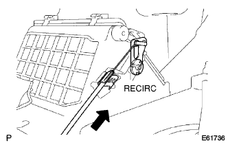
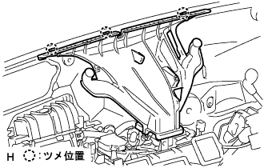
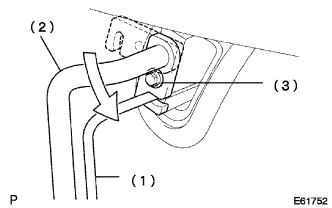

Air conditioner brois ASSY installation |
| 1. Air conditioner brois Assy installation |
Attach the air conditioning Yona Brova ASSY with two bolts, three nuts and two screws.
| 2. Air Inlet Danpa Control Cable SUB-ASSY installation (A / C manual other than cold region specification cars) |
|  |
Connect the air -in let dan pupon control cable to the heater control & accessory, and make it a RICIRC state.
Attach the inner cable tip to the control lever at the RECIRC position.
Push the outer cable in the direction of the arrow and attach it to the cable clamp.
Cut the air -in leetto damp pip control cable from the heater control and accessories.
| 3. Installation of engine control computers |
| 4. Deflosta nozzle assessed |
|  |
Match the claws and attach the deflosion tonic ASSY.
| 5. Installation panel SUB-ASSY LWR installation |
reference)| 6. Liquid tube SUB-ASSY A mounting |
Remove the vinyl tape wrapped around the tube joining.
Apply a compressor oil (ND-OIL8) to the joining part of the new O-ring and Liquid Cheube A.
Attach the O -ring to Liquid Cheube A.
Attach the liquid che uve A to the Coola Expan Syon valve.
| 7. |
|  |
Remove the vinyl tape wrapped around the joint of the pipe.
Apply a compressor oil (ND-Oil8) to the joint of the new O-ring and Sakusho Pipe.
Attach the O -ring to the Sakusho Pipe.
Rotate the hook -type connector to the tightening position.
Push in the shaft core of the seal hole and the pipe joint until it is ensured and tighten it with a bolt.
| 8. Refrigerant HFC-134A (R134A) Assembly |
Use a vacuum pump to do a vacuum drawing.
Fill the refrigerant HFC-134A (R134A).

| 9. Engine warm -up |
| 10. |
After filling the refrigerant gas, use a halogenery quest to check the leakage of the refrigerant gas.